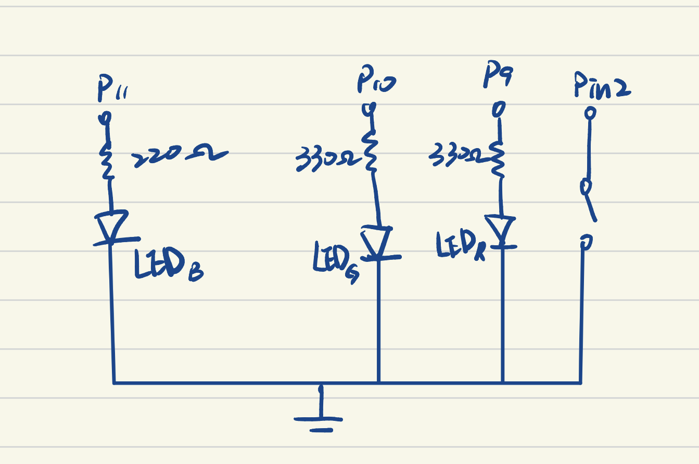
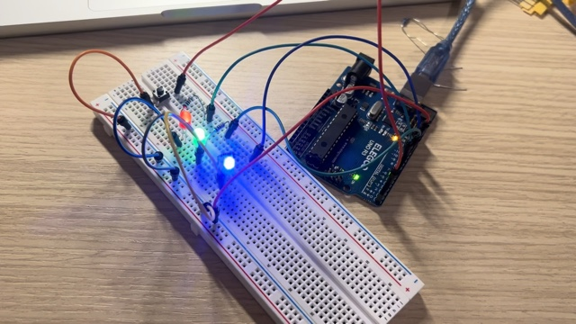
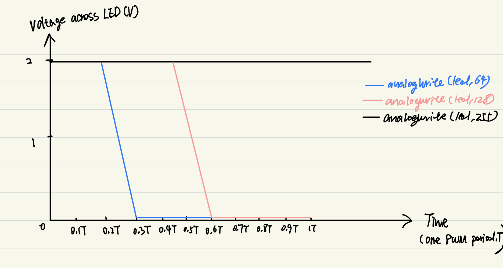
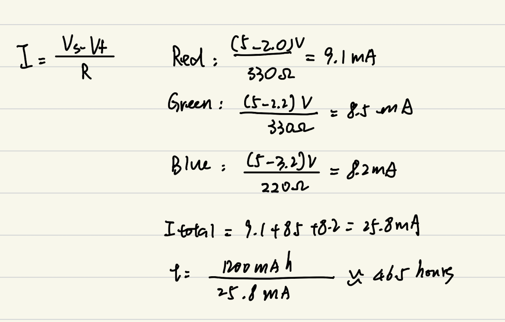
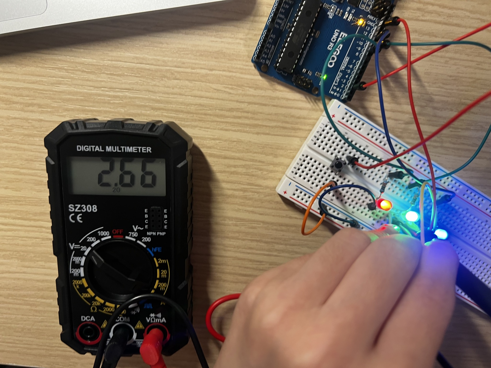

A button controls three colored LEDs. The red light fades in and out while the green and blue lights stay on.
Project overview
Press once. Light the toy.
The push button on D2 toggles the light-up toy on and off. When it is on, the red LED on D9 fades continuously; the green LED on D10 and blue LED on D11 remain steadily lit.
03
red, green, and blue LEDs
01
push button on digital pin 2
Fade
PWM brightness on pin 9
01
Plan
Schematic & resistor calculations

The hand-drawn schematic matches the firmware pin assignments: red D9 with 330 Ω, green D10 with 330 Ω, blue D11 with 220 Ω, and the button between D2 and GND. Each LED has its own series resistor.
Each LED needs its own series resistor to limit current. For the resistor selection, I used a 5 V Arduino output and a target current of 10 mA (0.010 A). The estimated forward voltages are 2.0 V for red, 2.2 V for green, and 3.2 V for blue; these are assumptions, not measured values.
First, subtract the LED forward voltage from the supply voltage to find the voltage across the resistor. Then use Ohm’s law:
R = VR / I = (Vs − Vf) / I Vs = 5 V; I = 10 mA = 0.010 A.
Red · D9R = (5 − 2.0) / 0.010 = 300 Ω → use 330 Ω
Green · D10R = (5 − 2.2) / 0.010 = 280 Ω → use 330 Ω
Blue · D11R = (5 − 3.2) / 0.010 = 180 Ω → use 220 Ω
I chose the larger standard resistor values of 330 Ω, 330 Ω, and 220 Ω to keep the estimated current below the 10 mA target. With the resistors used in the circuit, the estimated full-on currents are:
Red · 330 ΩI = (5 − 2.0) / 330 = 0.00909 A ≈ 9.1 mA
Green · 330 ΩI = (5 − 2.2) / 330 = 0.00848 A ≈ 8.5 mA
Blue · 220 ΩI = (5 − 3.2) / 220 = 0.00818 A ≈ 8.2 mA
02
Build
Physical circuit

The assembled circuit with the Arduino, push button, and red, green, and blue LEDs.
Each LED is connected in series with its resistor and returns to the common ground. The button connects D2 to ground; the firmware enables the Arduino's internal pull-up resistor.
D9330 Ω → red LED → GND
D10330 Ω → green LED → GND
D11220 Ω → blue LED → GND
D2push button → GND
With INPUT_PULLUP, the pressed button current is limited by the Arduino's internal pull-up (about 20–50 kΩ): 5 V / 20–50 kΩ ≈ 0.10–0.25 mA. No separate button resistor is needed in this wiring.
03
Test
Circuit operation
Video demonstration of the button-controlled three-LED circuit.
Press the button once and all three LEDs turn on. The red LED smoothly fades brighter and dimmer; the green and blue LEDs stay on. Press the button again and all three LEDs turn off.
Firmware
Button toggle & fade
Every line with code has a short explanation directly above it. D9 uses PWM for fading; D10 and D11 use digital output.
// Store the digital pin connected to the button.
const int buttonPin = 2;
// Store the pins connected to the red, green, and blue LEDs.
const int ledPins[] = {9, 10, 11};
// Remember whether the LEDs should currently be on.
bool lightsOn = false;
// Store the button's previous raw reading; INPUT_PULLUP is HIGH when released.
int lastButtonReading = HIGH;
// Store the last stable button state.
int buttonState = HIGH;
// Store when the raw button reading last changed.
unsigned long lastDebounceTime = 0;
// Set the time the button must remain steady to filter contact bounce.
const unsigned long debounceDelay = 35;
// Store the current brightness of the red LED.
int brightness = 0;
// Set the fade direction: 1 means brighter and -1 means dimmer.
int fadeDirection = 1;
// Store when the red LED brightness was last updated.
unsigned long lastFadeUpdate = 0;
// Configure the button and LED pins when the program starts.
void setup() {
// Enable the internal pull-up resistor; wire the button between D2 and GND.
pinMode(buttonPin, INPUT_PULLUP);
// Use a for loop to configure each of the three LED pins as an output.
for (int i = 0; i < 3; i++) {
// Set the current LED pin to output mode.
pinMode(ledPins[i], OUTPUT);
}
}
// Read the button and update the toy's light pattern continuously.
void loop() {
// Read the button's current raw digital state.
int reading = digitalRead(buttonPin);
// Restart the debounce timer whenever the raw reading changes.
if (reading != lastButtonReading) {
// Record the time of this raw state change.
lastDebounceTime = millis();
}
// Accept a button reading only after it has remained stable long enough.
if (millis() - lastDebounceTime > debounceDelay) {
// Check whether the stable reading differs from the last confirmed state.
if (reading != buttonState) {
// Save the newly confirmed button state.
buttonState = reading;
// With INPUT_PULLUP, a pressed button reads LOW.
if (buttonState == LOW) {
// Toggle the whole light pattern once for each press.
lightsOn = !lightsOn;
}
}
}
// Save this raw reading for comparison on the next loop pass.
lastButtonReading = reading;
// Check whether the toy's lights are currently turned off.
if (!lightsOn) {
// Use a for loop to switch off all three LED pins.
for (int i = 0; i < 3; i++) {
// Drive the current LED pin LOW to turn it off.
digitalWrite(ledPins[i], LOW);
}
// Ensure the fading red LED also has zero PWM brightness.
analogWrite(ledPins[0], 0);
// Finish this pass while the LEDs are off.
return;
}
// Keep the green LED on while the toy is active.
digitalWrite(ledPins[1], HIGH);
// Keep the blue LED on while the toy is active.
digitalWrite(ledPins[2], HIGH);
// Update the red LED fade every 10 milliseconds without blocking button reads.
if (millis() - lastFadeUpdate >= 10) {
// Save the time of this brightness update.
lastFadeUpdate = millis();
// Move the red LED brightness one step in the current fade direction.
brightness = brightness + fadeDirection;
// Reverse direction when the red LED reaches minimum brightness.
if (brightness <= 0) {
// Keep brightness within the allowed 0-to-255 PWM range.
brightness = 0;
// Start fading brighter again.
fadeDirection = 1;
}
// Reverse direction when the red LED reaches maximum brightness.
if (brightness >= 255) {
// Keep brightness within the allowed 0-to-255 PWM range.
brightness = 255;
// Start fading dimmer again.
fadeDirection = -1;
}
// Use PWM to set the red LED brightness and create the fade effect.
analogWrite(ledPins[0], brightness);
}
}
04
Analysis
Additional questions
01
Voltage across a red LED at three PWM values
The chart shows the voltage across the LED during one PWM period. A red LED is approximated as about 2.0 V when on and 0 V when off. `analogWrite()` values 64 and 128 produce about 25% and 50% duty cycles; 255 stays on continuously.

My chart shows voltage across the red LED over one PWM period. The X axis is time and the Y axis is voltage; the three traces represent analogWrite values 64, 128, and 255.
02
Total current and battery runtime
Using the estimated forward voltages, the three branch currents add to 9.1 + 8.5 + 8.2 = 25.8 mA. This is below the Arduino Uno's approximately 200 mA combined I/O current limit, and each pin supplies less than 20 mA.
For a 1200 mAh battery, the LED-only estimate is 1200 mAh / 25.8 mA ≈ 46.5 hours, as shown in my calculation below. This estimate assumes all three LEDs are continuously on at full brightness and uses the estimated LED forward voltages. It excludes the Arduino board's own current and battery conversion losses, so actual runtime under these conditions will be shorter.

My total current and battery runtime calculation, using 330 Ω for red and green and 220 Ω for blue.
03
Measured LED voltage
The multimeter photo shows 2.66 V across the green LED while it is on. The theoretical value used for the green LED calculation was 2.2 V, so the measured reading is 0.46 V higher. Forward voltage varies with the specific LED, current, and temperature; the measured value is the best record for this built circuit.

Measurement photo: the multimeter reads 2.66 V across the green LED.
04
AI use and reflection
I used AI to help debug my Arduino code and build this website.